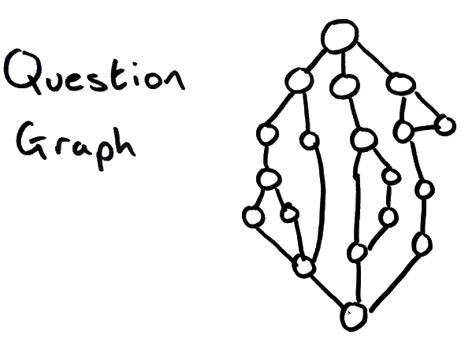
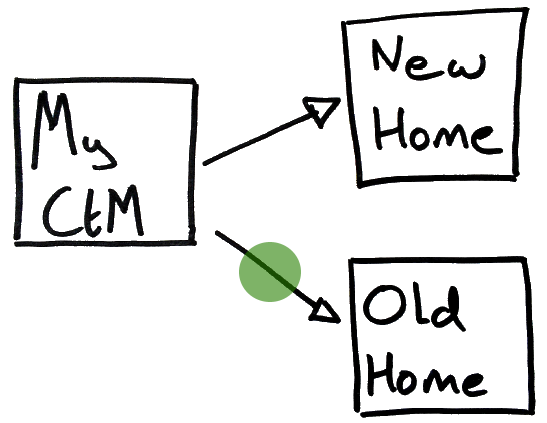
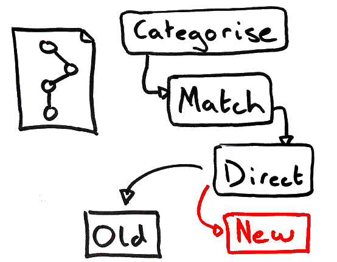
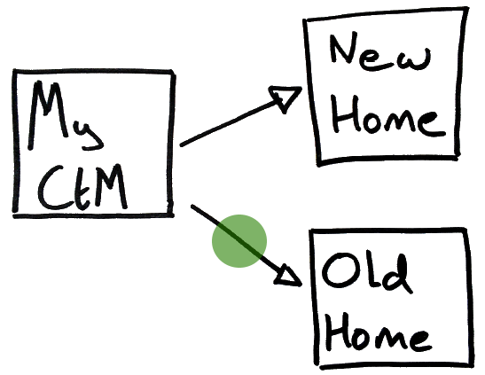
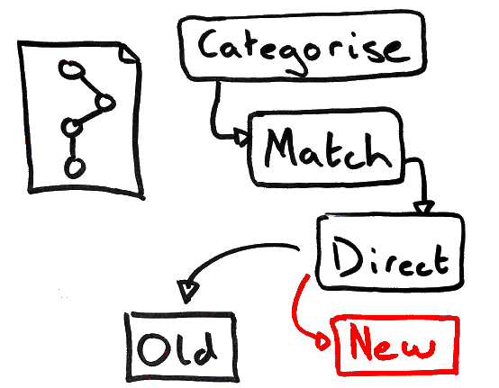
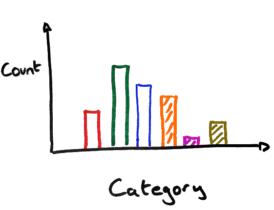
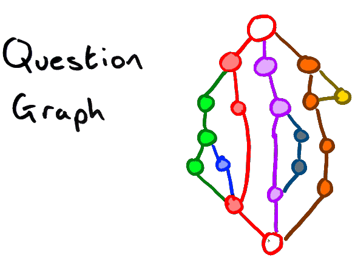
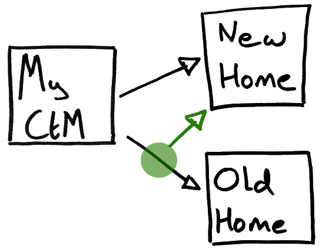

@nearlyadam
Get value sooner
using data
by Adam Straughan
Traditional Approach
2-3 Month Development
No Feedback
Stored Value
Incremental Approach
Data driven choices
Get value asap

 



Value!



Take Aways
Aim for incremental
Measure & Evaluate
Get value early